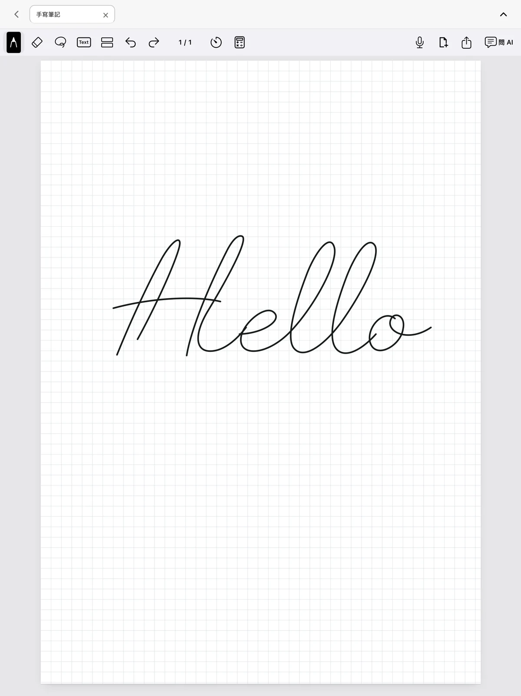
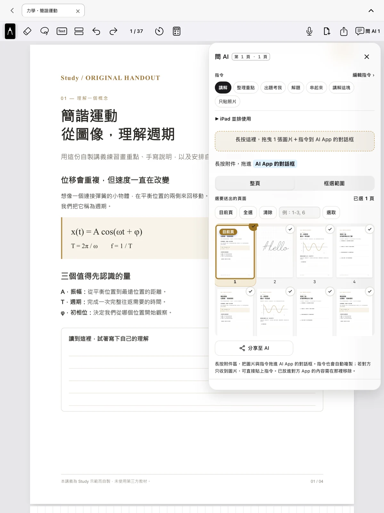

聲音，也是一種筆記。
錄下課堂重點，暫停、回放、調整倍速，
再回到想聽懂的那一刻。
從講義上的第一筆，到每一天的讀書安排。
Studitude，讓筆記與課業，在同一個地方好好展開。

在文字旁畫一條線，在留白處補一個想法。
把別人的知識，變成自己的理解。
用筆與螢光筆標註重點，停留校正圖形，加入文字、圖片與填色。從推導一條公式，到整理一頁思緒，都在同一張紙上。

不用再手動截圖，也不用一遍遍輸入相同指令。選好整頁或框選一塊區域，把圖片與常用提問一次準備好。
Studitude 準備附件與指令；回答由你選擇的外部 AI App 提供。外部服務可能需要帳號與網路，也可以只分享圖片。
把常用的小工具，留在正在讀的那一頁。
錄下課堂重點，暫停、回放、調整倍速，
再回到想聽懂的那一刻。
計時與倒數計時，用滾輪選好時間，
跟著圓環，一點點完成。
分數、根號、複數與方程式，
在筆記旁的小視窗裡完成。
記錄讀過的頁面，安排接下來的考試。
讓忙碌的學期，多一點從容。
不用建立 Studitude 帳號，沒有廣告或訂閱。
文件、錄音與讀書紀錄儲存在裝置上；
由你決定何時匯出、分享，以及分享給誰。
Studitude：手寫筆記與讀書規劃
前往 App Store iPad · iPhone